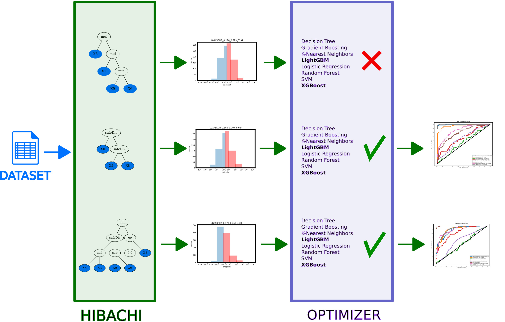

Methods
DIGEN benchmark emerged as the result of multilevel optimization starting from a duel between 2 ML methods with 15 different random seeds. As running ML method with default parameters doesn't necessarily reflect its actual performance, a complex strategy aimed at determining actual ML methods performance is performed.
In the first stage, a two-factor optimization is used to find the optimal candidates that both maximize the difference between the 2 ML methods in terms of AUROC score as well as maximize the standard deviation of all the methods. The specific parameters of ML methods are chosen according to their distribution based on the recommendations from AutoSklearn 1 2, Optuna 3, Hyperopt 4 and expert knowledge. The best performing candidates from each of the duel are selected for thorough optimization of all the ML methods.
In the second stage, all the selected candidates are optimized and benchmarked under the same conditions (200 optimizations).
The third stage is simply filtering the results down to 40 datasets, which differentiate the performance of 8 ML the most.
Algorithm
Our goal in development of DIGEN was to provide a balanced datasets with N(0,1) distributed data and manipulate the endpoint based on the ML methods performance. The steps of the algorithm, which was used to determine the datesets are outlined below.
HIBACHI
Heuristic Identification of Biological Architectures for simulating Complex Hierarchical Interactions (HIBACHI) 5 is a method based on genetic programming (GP) which creates different mathematical formulas for the endpoint. The endpoints of each of the dataset is a mathematical formula, represented by a directed graph that contains variables (features of the dataset), terminals (values) as well as mathematical operators.
Stage 1 - pairwise duels
The pipeline starts with generating independent variables of the dataset using normal distribution N(0,1). Then, multiple candidates for dependent variable (endpoint) are generated using HIBACHI. After evaluating each of the instances, all the results are sorted and binarized, so that the half of the largest values is assigned '1' and half with lowest - '0'.

After the endpoints are determined, the dataset is split into training and testing sets (80%/20%). Training part is further split into 10 folds. Optuna 3 is used to control the tuning of ML methods (see Algorithm 1).
next fold in 10-fold cross validation
Both ML methods participating in the duel are optimized 10 times and their performance is averaged on 2 out of 10 folds. This follows the approach presented by pruned-cv 8. If this difference is positive and significantly better than the previously found ones, all 8 ML methods are evaluated on full 10 folds to determine two optimization factors: difference in AUROC score between 2 competing methods as well as standard deviation between the scores of all 8 ML methods. Otherwise, the potential solution is pruned and invalidated.
Having computed optimization factors for all candidates in a given iteration, Pareto-optimal candidates are selected using NSGA-III strategy 6 and corresponding GP-trees are mutated using genetic operators, such as mutations and crossovers.
Algorithm stage 2 - thorough optimizations
After completing all pairwise duels between ML methods using 15 different random seeds, an extended optimization using 200 combinations of hyper-parameters is performed in order to reduce bias from improperly settings the parameters. Finally, after selecting several hundreds of the most promising solutions, 100 different random seeds are tested, so that the results are independent on the choice of the random seed. The final step includes manual selection of the datasets, which in our opinion represent the most diverse results within the collection.
Algorithm stage 3 - filtering the best datasets
In the final steps, a replication of the results is considered. In this stage, for each of the formulas selected, 100 random seeds are used to create different datasets, which are later analyzed using the same model. Each of the datasets is used to run 100 optimizations of each of the 8 ML methods. Based on the results, the collection is narrowed down to 40 datasets.
Operands
In order to determine the dependent variable in each of the datasets in DIGEN40 we used Genetic Programming 7. Using evolutionary algorithm, in each iteration multiple candidates are tested that feature the following operands: arithmetic: add, subtract, multiply, safe division (safeDiv); and relational: greater (or equal) than, lesser (or equal) than, equal, not equal, minimum and maximum. The DIGEN collection is diverse in terms of the choice of the operators included. Only two datasets use exactly the same set of operators (safe division and multiplication), but in different order (either first safeDiv than multiplication, or the opposite).
References
-
Matthias Feurer, Aaron Klein, Katharina Eggensperger, Jost Springenberg, Manuel Blum, and Frank Hutter. Efficient and robust automated machine learning. In C. Cortes, N. D. Lawrence, D. D. Lee, M. Sugiyama, and R. Garnett, editors, Advances in Neural Information Processing Systems 28, pages 2962–2970. Curran Associates, Inc., 2015. URL: http://papers.nips.cc/paper/5872-efficient-and-robust-automated-machine-learning.pdf. ↩
-
Matthias Feurer, Katharina Eggensperger, Stefan Falkner, Marius Lindauer, and Frank Hutter. Auto-sklearn 2.0: the next generation. arXiv preprint arXiv:2007.04074, 2020. ↩
-
Takuya Akiba, Shotaro Sano, Toshihiko Yanase, Takeru Ohta, and Masanori Koyama. Optuna: a next-generation hyperparameter optimization framework. In Proceedings of the 25rd ACM SIGKDD International Conference on Knowledge Discovery and Data Mining. 2019. ↩↩
-
James Bergstra, Brent Komer, Chris Eliasmith, Dan Yamins, and David D Cox. Hyperopt: a python library for model selection and hyperparameter optimization. Computational Science & Discovery, 8:014008, 2015. ↩
-
Jason H Moore, Randal S Olson, Peter Schmitt, Yong Chen, and Elisabetta Manduchi. How computational thought experiments can improve our understanding of the genetic architecture of common human diseases. In Artificial Life Conference Proceedings, 23–30. MIT Press, 2018. ↩
-
Kalyanmoy Deb and Himanshu Jain. An evolutionary many-objective optimization algorithm using reference-point-based nondominated sorting approach, part i: solving problems with box constraints. IEEE transactions on evolutionary computation, 18:577–601, 2013. ↩
-
John R Koza and John R Koza. Genetic programming: on the programming of computers by means of natural selection. Volume 1. MIT press, 1992. ↩
-
https://github.com/PiotrekGa/pruned-cv ↩